10月4日下午，张老师带着马博、谢起航和李园园从慈溪医工所出发，前往上海浦东机场与赵老师汇合。平时两个小时的路程，恰逢国庆假期，硬是花了将近四个小时才完成，焦急并激动。到达机场-排队托运领登机牌-排队安检过海关-起飞。
当地时间10月5日凌晨，经过10多个小时的飞行，我们到达中转机场伊斯坦布尔（比国内晚5个小时），与新加坡过来的付华柱老师、王猛老师和方慧卉老师汇合，我们坐在麦当劳旁边竟玩起了三国杀。还结识了周志华组的施意博士，互加微信后了解到，他在去年MICCAI就认识了陈涛师兄和刘守岳师兄。（世界真的很奇妙哈！）
当地时间10月5日中午，从伊斯坦布尔前往马拉喀什（比国内晚7个小时）。落地后拿行李，过海关（付老师和王老师被关了小黑屋，哈哈哈），换钱买电话卡，打车去酒店。初到非洲大地，还是能感受到他的燥热的。我们到达酒店，办理入住后，才发现酒店什么都不提供除了床，只好去附近的超市购买生活用品和水。随后去吃了个晚饭，海鲜意面不好吃。一路舟车劳顿，我们甚是疲惫。躺在床上秒睡，可是凌晨五点又秒醒，随后便睡不着了。
10月6日，MICCAI第一天，是注册日也是workshop第一天。我们打车前往会场，马拉喀什的出租车起步就是100迪拉姆，用软件打车如果被出租车发现后会被打？反正indrive这类软件在那是违法的。到达会场，领自己的会议牌，随后我们去听了一个脑血管标记的workshop（TopCow），上去讲的都是大佬，如何提取血管的中心线，拓扑结构等。中间蹭了茶歇，面包饮料应有尽有，中午蹭了饭。由于我们是没有注册6号和10号的workshop，所以叫做蹭。下午去听了大模型和基础模型在医学图像上的运用，提及最多的就是上海的AiLab，TMI的主编和副主编都在听，受益匪浅。晚上约了一起去不眠广场，一路瞎逛。渐渐的太阳要下山了，我们找了一家带二楼的餐厅欣赏落日。我们吃了当地的特色塔吉锅，库次库次。只有塔吉锅勉强符合我们的胃口。吃罢，我们继续沿着不眠广场的街道漫步，在一个香水店购买了很多战利品，当然谢起航没有买，他不喜欢这一套。临近晚上十点，我们已有归意，但是却不认识路了。有些担心，想打车打不到。这时有当地小混混会英语想帮我们，我们本已拒绝，却已成既定事实。他想要小费，害怕的我们随便塞给了他十几块。他不满意，我们最终还是偷偷溜走。都怪谢起航，本来早就谈好120迪拉姆五人一起回酒店，被谢起航以原则问题回绝。最终痛失210+迪拉姆以及一天的好心情。摩洛哥的出租车分打车和小车，打车可以坐五个人，小车最多只能坐3个人即使能坐4个人。
10月7日，MICCAI正式会议的第一天，会场内座无虚席。会议主席讲述着MICCAI多年发展历程，今年录用文章的基本情况。咱中国人意料之内的占据40%以上的席位，甚是恐怖。分割任务还是占据了主流。下午是马博的poster，我们前去观摩。我们也阅读交流了其他poster，很多文章都是用了视觉语言大模型，用到文本这一全新模态信息（不管是单词还是句子），用于疾病的诊断，即使有的结果还没有利用单一图像模态的好。上午、下午两次茶歇以及中午的午饭，吃得很撑呀。
10月8日，MICCAI正式会议的第二天，主会场内任然座无虚席。台上是oral的presentation，很是精彩。比如利用bi-Mamba通过多视角胸部 X 光片检测心血管疾病，可见热点得尽快追赶。同样的茶歇和午餐，有些腻歪了。吃过午饭，我们还拍摄了一个算是比较齐全的合照。下午是谢起航的poster，来交流的人不多。对于一些外国友人的提问，他并没有很完整的回答，对于国人的提问到侃侃而谈。总的来说，他的英语还得多练。晚上是官方举行的每人用餐标准高达500迪拉姆的晚宴。在我们落座后，沈定刚老师还来找我们拼桌，被我们无情的拒绝了，哈哈哈。我们已经满员了，不然肯定希望和他坐一起。依旧是塔吉锅和库次库次，以及饭后小水果，也就是牛肉塔吉锅好吃一点。饭后还有丰富的表演节目，不过确实是累了，我们就先撤了。
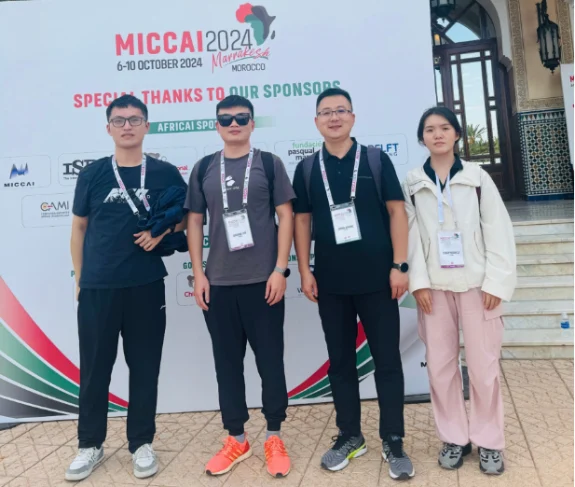
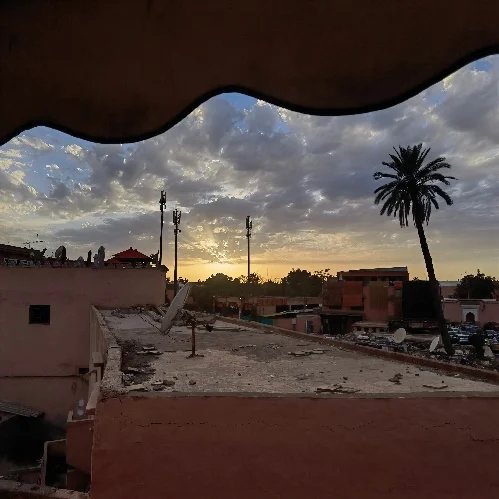
10月6日下午合照与不眠广场的落日
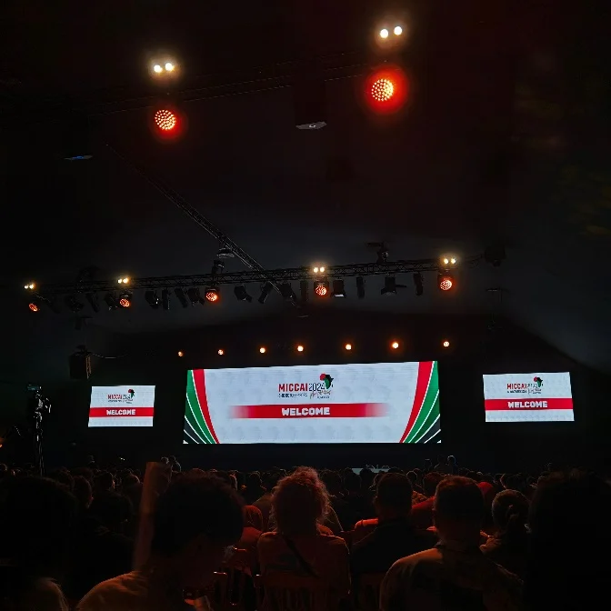
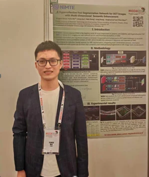
10月7日上午，MICCAI主会场与10月7号下午马博poster
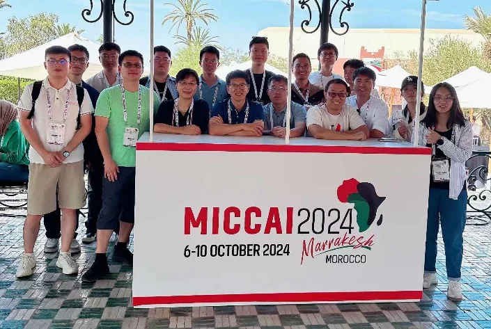
10月8号中午合照
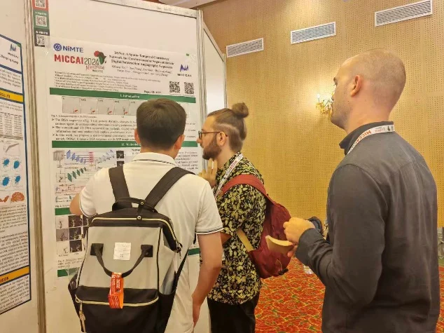
10月8号下午谢起航poster
10月9日，MICCAI正式会议的第三天，也是最后一天。我们同样是听了几个oral presentation。接着前往poster会议区。上午是有李园园的poster，和她交流的人络绎不绝，她都能回答自如。照例的茶歇和午饭，接着还颁布了best paper award。下午我们去马拉喀什皇宫游完了一番，不好看。有趣的是，偶遇了赵老师和其他老师。晚上，我们继续漫步马拉喀什街头，准备前往一家中餐厅用餐，步行四十多分钟终于到了。这么多天终于品尝到了中餐，味道肯定是好极了，我们一行人进行了光盘行动。
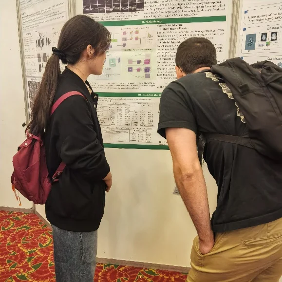
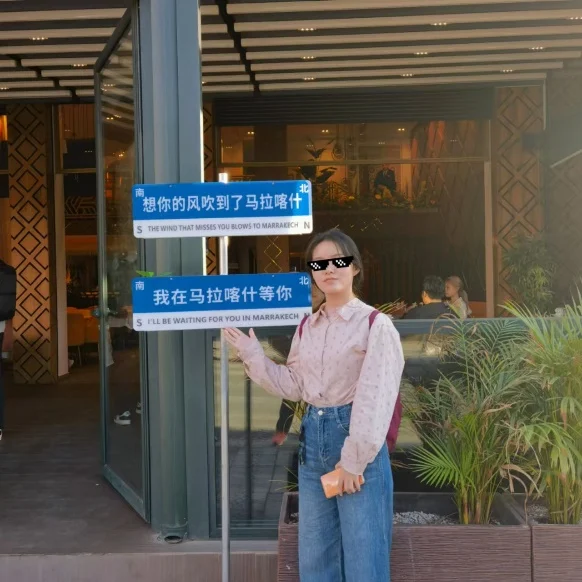
10月9号上午李园园poster与10月9号晚李园园在中餐厅
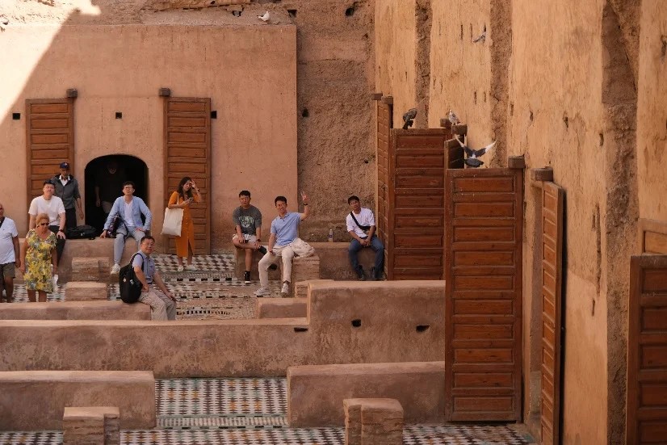
10月9号下午在皇宫
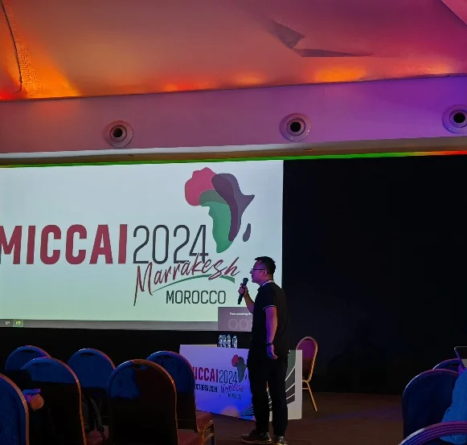
10月10号张老师主持session
10月10号，这是MICCAI的最后一天，也是workshop的最后一天，上午我们去参加由imed举办的OMIA workshop。在会上，张老师主持了一个session，另外谢建洋师兄还获得了OMIA的best poster paper。下午我们报了一个旅游团，游玩6个小时，我们开了沙滩车，骑了骆驼，欣赏了落日，最后享受了一顿篝火晚餐。
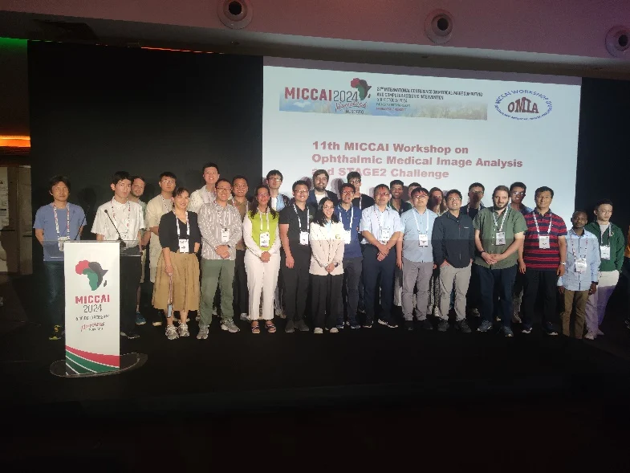
10月10号 OMIA合照
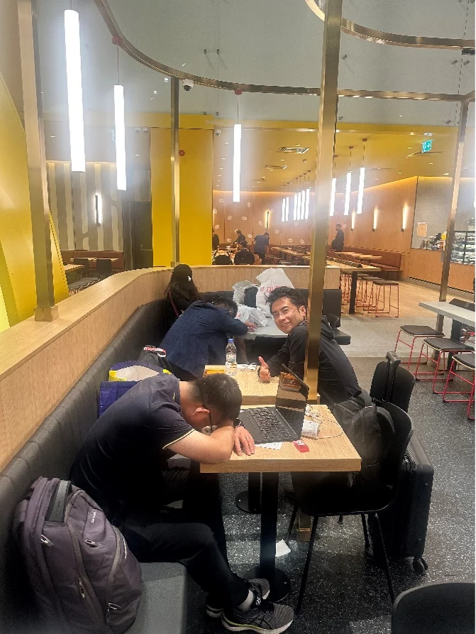
我们五个人的合照，终于有合照了
10月11号，启程回国，同样在是在伊斯坦布尔中转，到达时已经是凌晨，苦恼的是，我们的航班延误了四个小时。无奈，我们又来到了麦当劳休息。我们拍摄了另一种风格的合照，终于拍了。对，我们在会场忘记拍了，哈哈哈。10月12号深夜到上海，到慈溪时，已经是第二天凌晨一点了。（吐槽一点，土航的飞机餐真一般。）
上面写的是一些流水账，但是确实一段很难忘的经历。在这期间认识了很多朋友，经历了很多趣事，我们相信会一直记得。
总之，这次MICCAI会议，我们真的学到很多，与大佬们近距离基础，和志同道合的人交流学术，科研的劲头更强烈了。那么，大家赶快先把视觉语言模型用起来吧。